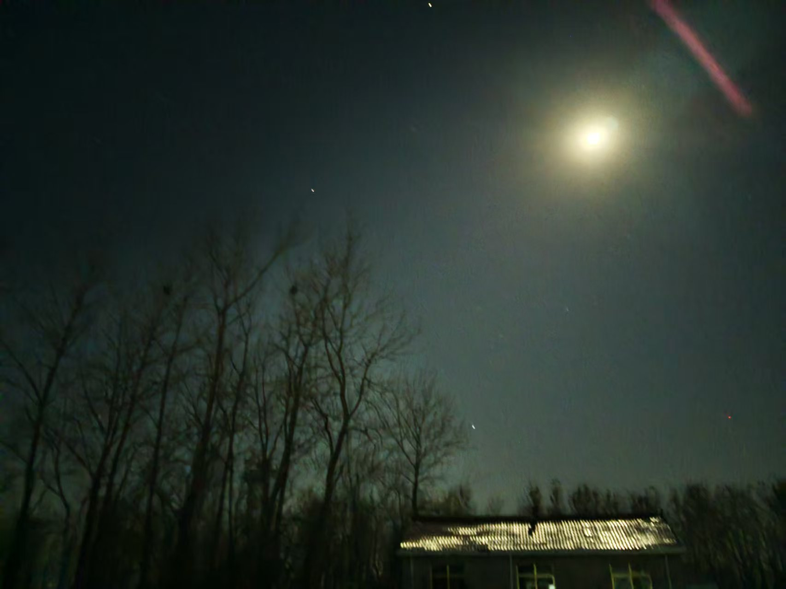

—
从第一天开始
每一点变化都值得记录。
FIELD NOTESNO. 01
正在读取今天的日期…
一株奶油白菜的天气、生长与日常。
不赶时间，认真记录每一次细小的变化。
始于 2026.11.19 · 阜阳的一方小菜园

TODAY, IN THE GARDEN
从第一天开始
每一点变化都值得记录。
阜阳 · 当前天气
--°正在连接天气服务…
实时天气由 Open-Meteo 提供
拍下菜园今天的样子，发到这个聊天里。我会帮你把照片和记录更新到网站。
设置拍照提醒A LITTLE MORE EACH DAY
一张照片，一点观察。
日子会自己长出答案。
正在整理生长记录…
WEATHER, KEPT
阜阳 · 每天自动归档
最近的天气，留给以后的自己。
正在读取天气档案…
i 历史天气来自 Open-Meteo，通常次日更新；当前天气为实时预报接口数据。生长变化仅作日常观察，不构成农艺建议。
A FRIENDLY NUDGE
可以在这个浏览器里开启每日通知。拍完后把照片发到当前聊天，我会把它更新到静态网站。
通知只在已授权的浏览器中生效；静态网站关闭后，无法保证按时提醒。